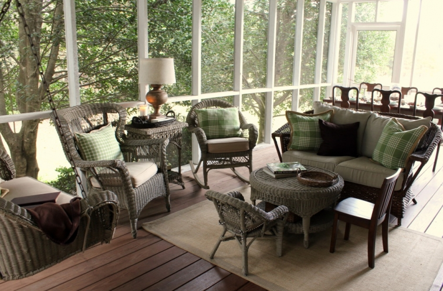

.png)
.PNG)
.PNG)
.PNG)
.PNG)
.PNG)
.JPG)
.JPG)
.PNG)
.PNG)


Happy Weekend and welcome back for a little more Thanksgiving at our house! I think I am doing this tour all wrong.  We should have come in the front door – the proper way to enter – and gone through the foyer and all, but since you came in the side door and went straight to the dining room and kitchen in part 1 (like family members do 🙂 ) then I suppose we can just keep on doing it this way and head out to…
the back porch.
Have I told you how much I really really like decorating the porch? Â It simply is a fun space to add seasonal touches, and it is so easy to do. Â I just pick a color scheme (like green and brown) and change out the pillows and the throw on the swing.
And then choose what I want to do over the desk..usually it is just an ordinary plant in a basket.
But I decided to do something a little different for Thanksgiving this year.
(And I think it turned out pretty interesting!)
 (Please ignore the sad looking floor there. Â Remember it rained here for 40 days and nights. Â Wait..that was in the Bible. Â Well it did rain here for many many days!)
(Please ignore the sad looking floor there. Â Remember it rained here for 40 days and nights. Â Wait..that was in the Bible. Â Well it did rain here for many many days!)
I had an image in my head to use garden tools on that wall. Â I thought for sure I would find some broken ones in our outside closet, but no luck. Â So I checked with my dad. Â He had quite an extensive collection of post-hole diggers out in his shed but no rakes or shovels. Â So I went to Home Depot…all their tools were too large and red. Â I finally found what I needed at Lowes…children’s garden tools. Â They wore assorted colors of purple and yellow and red, so I gave them a quick coat of brown spray paint, and they were perfect for what I needed.
A few nails in that wall and some wire hold them and the basket in place.  I foraged the woods for magnolia leaves, popped them in a bucket of water inside the basket, and stood back to look…it needed something more…a little brighter color.  That was when I got the bright idea to add the Mr. Turkey plates to the arrangement.  I used old plate holders to secure them to the wall, and then it was finished.  Not my normal style, but I like how it turned out. 🙂
Now let’s go to the other end of the porch with the skirted antique table.
Because this is usually used for serving food, this table almost always has a beverage dispenser on it.
I also like to have a plant at the other end of that table to balance the “weight” of the lamp, and then I fill in with small seasonal things. Â More magnolia branches came from the woods behind our house. Â I stuck them in another piece of pottery like those in the dining room and kitchen. Â When I was planning floral arrangements for this Thanksgiving, I was originally going to use cotton mixed in with magnolia, but I ended up liking the mass of the green without anything else with it. Â So goodbye to the cotton idea.
You know the chalkboard always has a message for the season as well. This was actually the second one I did for this board. Â When I put the first one up there, it just looked too busy. Â So I toned it down to this simple message…which is all we really need to remember anyway. Right?
And now to the table. Â Everything else on the porch is pretty easy to change out and decorate for the seasons, but the table is different. Â I really have to give it some thought and creativity. Â I normally know which salad plates I will be using, but I have to try them out with different dinner plates and assorted napkins. In this case, I knew I would be using the green Mr. Turkey ones from my mother.
I looked high and low for brown and white gingham napkins (not buffalo checks.) Brown gingham napkins would have been perfect.  Unfortunately there were none to be found in any store in person or online (at least by me.)  I would have even made them if I had been able to find fabric. No luck there either.  So if you see any brown gingham napkins anywhere, please let me know.
Plan B for the napkins then became to mix all the green plaids and checks together. Â I wanted to do something to bring in a touch of brown with the place setting, so I rolled up the napkins and tied them with some brown ribbon. In choosing the runner, I tried out several different fabrics that I had in my workroom closet, but in the end, the kraft paper fit the feel of the decor better than anything else. Â So I went with it down the center.
I always like to add lettering of some form to the table…whether it is on the table runner or on a stand alone place card or even tied to the silverware, napkin, or a glass. Â In this case, I simply wrote “thankful for you” on a kraft ring tag and tied the ribbon through it.
And now that brings us to the thing that most challenges me when decorating…the centerpiece.  I don’t know what it is about them, but they are sooo difficult for me to pull together. (Especially Christmas ones!) I had planned to use a simple centerpiece of magnolia branches in another piece of pottery with a few small pumpkins around it, but when I put it on the table it just didn’t work.  You couldn’t see over it, and it looked  like part of the Incredible Hulk there in the middle of the table. So goodbye Hulk…hello candle-standing-in-acorns.
I ran the baby pumpkins down the table with a mix of pine cones, nuts, and camellia leaves from the yard. Â (Their smaller scale worked better than the magnolia leaves on the narrow table.) A few votive candles in mason jars, and the centerpiece was complete. Hallelujah!Â
And that brings us to the end of part 2 of the tour. (I am saving the front porch for later.) I hope you have had fun checking out the Thanksgiving decor and following along as I have tried to explain my crazy thought process in decorating the space. For most of the year the porch is a very comfortable place to be (except during the extreme heat of the summer.)  We have had our Thanksgiving dinner and a couple of Christmas parties out there from time to time because the fall and winter weather can be so mild here in Georgia.  But not today!  It is in the low 40’s this morning, so I won’t be having my breakfast out there. (I’ll have it beside the fire in the family room. 🙂 )
I hope this fall weekend is full of good things for you and your family. Â I am working on a major painting/decorating project this weekend, so I need to let you know that although I will read all of your comments, I won’t be able to reply to any this weekend. (So sorry!) I’ve got a deadline to meet.
Take care.  Be thankful for the people in your life you hold dear today, and say a prayer for the people of France.  I hope you will be back here Monday when I have something really wonderful to share with you. 🙂  Oh, and there will be a part 3 of the Thanksgiving tour later next week!
Until next time…


.PNG)
Catching up with your posts this morning and love your idea of a calmer decor for November. Your house is perfect for changing co,ours and themes – so fun!
Such a beautiful selection! We were blessed this summer with a new daughter in law. Our first wedding! So, with all our wedding pictures I would probably choose the mini photo book! Thanks for thinking of us and offering this opportunity!
Your porch is so inviting! I love how you used the children’s garden tools and the turkey plates, very creative. Here in Florida we have shared many Thanksgiving meals on the porch!
An amazing porch. It’s looks like it saying “come on in!” Which I could. Love the garden tools and green plates on your wall. I would never have thought of that!! Gorgeous! Hope you and your family have a very happy Thanksgiving!!
Hi Kelly, I was especially glad to have your post to read on Saturday morning having gone to sleep thinking of Paris and all that had happened. Still finding it hard to write a cheery comment … Sorry! “In all things give thanks” has been in my thoughts this weekend …and I am so grateful to be reminded of this and how much we have to be thankful for. …even during sad times. The peacefulness of your porch and the calming decor somehow seems appropriate. As always your porch looks so welcoming …I wish I could find some brown and white napkins for you. Although I have to say your table setting looks just fine as it is!
I hope your weekend of decorating has gone well. Take care …
Looking forward to hearing from you and your next post.
Rosemary
As always, your decorating is serene and lovely. Your porch has always been my favorite room of your house and still remains so. Love the adorable arrangement of children’s toys and your turkey plates. I’ve always wanted to do a wall centerpiece with yard tools but never thought of using children’s yard tools. Perfect. Good luck accomplishing all that you seem to have going on.
Love your taste in decorating. Inspires me always! Thank you for sharing your beautiful home and talent. Have a blessed holiday season.
Thank you for the tour of your lovely home. So many wonderful ideas!
Lovely, lovely, lovely. I hope to recreate your adorable garden tools/basket to hang on my patio wall next to my potting bench–you have inspired me once again!
Just perfect! Using the child sized tools was ingenious and made for such a beautiful arrangement. Your table is so warm and inviting and the lettering on the napkins is personal touch that every Thanksgiving table needs. Just perfect!
I l.o.v.e. the tool/plate arrangement!!! You are so creative!!!!
I loved the simplicity of all of your Thanksgiving decorations. I really loved the use of the magnolia leaves and the light colored pumpkins that decorated your home!. Happy Thanksgiving to the Gray family.
Your table arrangement is very pretty. You are lucky you can still take all that creativity you are blessed with outdoors.
I love your yard….and the greenery!
I’m thankful for you Kelly, even though we don’t know each other. I enjoy reading your blog.
Indeed we need to pray for France.
Kelly,
The porch looks perfectly cozy to me. I will keep my eyes open for some grosgrain brown and white napkins. I really like those green turkey plates. I can’t wait to see what you are up to with your paint project. Thanks for sharing. Take care.
Dawn
The green and brown looks so pretty together. I think your centerpiece turned out perfect. I like to use candles too, but our dinner will be early so no candles. I’ve already foraged for leaves, pine cones, etc. so I ‘ll have to work on mine. Thanks for the inspiration! The magnolia is beautiful and I love the arrangement with the tools and plates! 🙂
Well….you did not disappoint! It is so gorgeous! I love everything you did. The table looks great and I love the centerpiece. No worries about not commenting. I often don’t have time to comment on my blog comments. I try to as often as possible but sometimes life is just too busy. I think everyone understands. 🙂 Can’t wait to see what you are sharing Monday!
Blessings, Vicky
Kelly – One of my favorite spots in your home – the screened porch. Not sure why I’m so in love with screened-in porches, but I just love them, especially sleeping porches. The one in the movie with Reese Witherspoon as a young girl is wonderful. A lot of that movie takes place on that porch with her sister. Anyway, your decorating is spot on, so clever. Always look forward to your posts. And, thinking today of the people of France.
Love the tool garden decor and the table setting. You are so talented. Thanks for the ideas. And yes, so very sad about the events in Paris…
Love love love it!! The garden tools wall art is brilliant.
Wait, did you say ‘crazy’ thought process? Well, if your thought process is crazy, there are a lot of us who would gladly like to be as crazy as you! I love the porch decorating from one end to the other. The vibe is humble, earthy, thankful. The colors blend so well with nature’s surroundings. Your creative decor above the desk reminds me of how thankful I am for all those who work hard to produce the food we enjoy throughout the year. I love it! Your table centerpiece is picture perfect. Thank you for sharing all of this with us. The last picture was the most delightful way to end this post. So serene. It feels extremely welcoming..waiting..comforting, no place like home. Beautiful. Thanks, Kelly. Have a wonderful weekend.
Sherry
Dear Kelly,
Living in South Central Texas, I continue to wonder how often you must “de-dust” the back porch and it’s furniture… what a wonderful spot! I so enjoyed the multiple posts for Thanksgiving and your attention to the details. Thank you for sharing your ideas. I’m now going to go up into the attic to bring down the boxes of collected pine cones to start the decorating and snipping of greenery from the garden – between the showers. Finally, rain! You are a great motivator…
Where did you ever find the time to teach?
Carol
I also love the neutral look for Thanksgiving. What a lovely way to create an environment that calms and leads one to a place of reflecting on the purpose for the gathering. Thanksgiving is such an important season. I have just returned from a trip to the Amish country in Ohio with a few good friends. It was so good to slow down and reflect on all the things we have to be thankful for. I actually saw a sign that I plan to incorporate in our home. It said, “What if you woke up tomorrow and only had what you had thanked God for yesterday?” I found that to be so powerful. Yes, let us give thanks! And one of the things I am thankful for this year is my new found friend Kelly. Thanks for all that you share with us!
The children’s garden tools are so cute. Loved your idea of painting them brown. Magnolia leaves a classic…always a great choice. I also love the design of your website…so colorful and easy to read. Also love being able to located order posts so easily. Whenever I see a new post from you I feel like I’ve just been invited to a special occasion.
Just love Kelly what you have done with your porch for Thanksgiving. Your centerpiece is so lovely. I just love magnolia everywhere and the arrangement in the basket on the wall with the plates surrounding it. Please put me on your porch!!! Have a wonderful Thanksgiving. God Bless.
Wow…so beautiful…and worth waiting for 🙂 …love your thought process as you share your decorating! And to me, the green and white napkins lighten up the neutrals and browns on the table. The deep brown ribbon ties are just the right touch of brown you needed – jmho…
It was 34 here in the early morning here and reminded me of my New England days around this time of year. BUT, I love that it’s already almost 50 and climbing lol..have a wonderful weekend with your project, and once again, thank you for sharing your generous heart with all of us! ♥ Happy painting!
Kelly,
Your house ALWAYS looks so lovely…I am jealous of your decorating…you have a knack. Where did you get your plaid curtains? I love how you incorporated the green in your house. Very nice.
Kelly,
I’m sure it’s because we’ll enjoying by favorite season, but your table and choice of green and brown is my all time favorite of your beautiful work. (You know I’ll be saying this about your Christmas decor as well!). I have always loved your porch and can imagine using it a lot if I had such an outdoor room as that. The magnolia leaves are the perfect brown/green colors for your chosen scheme. Of all that you’ve shared today, hands down, I love the wall swag best of all. What a wonderful focal point—I hope you’ll provide more details on how you wired them so that they would actually stay in place without slipping.
I’m so excited to hear about your decorating project for the weekend and can only hope it’s another magazine spread.
🙂
xo,
Karen
Love every single detail, but especially the painted children’s tools. You’re a clever pilgrim!
I love every time you decorate that porch! How nice to be able to use it most of the year…not happening here in NJ! I love the napkins you used and the rest of the green. The whole centerpiece is just perfect! I always love seeing those white pumpkins!
Shelley
Thank you, Kelly. I say that because it is clear you value and treasure the simplicity and serenity of Thanksgiving. I feel somber today because of the terrorist attacks in Paris. Somehow seeing your Thanksgiving table and home is calming. The peacefulness is soothing.
Thanks again, Kelly –
Sandy
Oh….Sweet Torture… Your porch Thanksgiving is so serene. The play with green and brown, all the more brings nature to one’s heart and to table. I think you did a great job with your desk wall display too. Here in the Midwest, I would need a heated porch, as we woke up to 26 degrees this morning. Ugh!Enjoy every minute with your family in your beautiful home, as we are shaken by the events in France. Our eldest daughter and her boyfriend just made their second trip there a month ago. Giving thanks that their European travels were safe.
Just love your decorating!I wish I had a porch to decorate! Can’t wait to see the front porch! Have a good weekend.
Kelly, you turn a porch into a work of art! I love the wall hanging!!
Gingham napkins–Check ebay! 🙂
http://www.ebay.com/itm/6-BRAND-NEW-BROWN-GINGHAM-NAPKINS-CHECK-18-x-18-DINING-KITCHEN-BARBECUE-/231726832531?hash=item35f3fedb93:g:mSIAAOSwT6pViBwH
What a lovely room. The back porch will be a comfortable and welcoming place to have your thanksgiving meal as you enjoy the beauty of nature around you. Kelly, you have a special give in decorating and your creativity inspires so many of your followers. Have a most blessed holiday.
As I sit, somberly this cool southern Saturday morning, sipping my daily hot green tea, your post was the balm my soul needed. Perfection–just want to say a quiet
“thank you”, Kelly.
Plates and children’s garden tools with the magnolias in a basket is the cutest and most original design I have seen in a long time. I love how your creative mind sees beauty. I wish Ohio and Georgia were closer neighbors. Have a blessed weekend.
Love your centerpiece and those cute turkey plates.
Kelly, I completely want to duplicate this table. I absolutely love it. I think the napkins are perfect! Have a great weekend working on your project.
I just love that shot of your pretty house in it’s fall splendor. What is the pretty detached structure ( or is it attached to your main house)? Your dining room and porch centerpiece are lovely. I just love that you used magnolia. The house we just bought has no magnolia tree and the sweet couple from our church who let me cut all the magnolia I wanted from their huge tree just moved to Pa.😥
I can’t wait to see what you are working on this weekend! So thankful for Talk of the House! Prayers to Paris.
Hi Kelly,
Your Thanksgiving table looks amazing. I love the table runner over the wood table and the votive candles in the Mason Jars. I’m a big fan of Ball Mason Jars. The company was started in the 1800’s by five brothers. They also founded Ball University in Muncie,Indiana. See their web site, http://www.freshpreserving.com if you like to can. The recipes are great. The supermarket was already bustling yesterday. I shopped for tonight as I’m having a friends over for dinner. When I’m at sea, theyhelp me out. Your house is beautiful. I can’t wait to do my renovation on my ranch cottage.